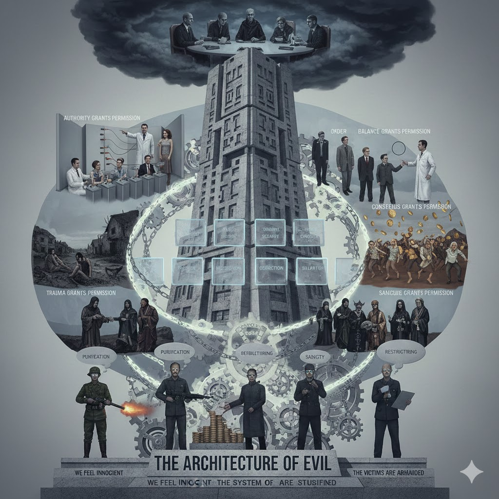

Summary: They Don’t Think They’re Evil. That’s Why It Works | Prof Jiang Xueqin
This article presents some of Professor Jiang Xueqin's perspectives about evil from institutions being more dangerous than evil individuals. This is basically a summary of the following video:
While some individuals can be wicked and evil, the real risk of evil is in groups, bureaucracies, and administrations. Human beings tend to be kind and compassionate, but social structures can be arbitrary, heartless, and cruel. Administrations may starve populations and crash economies intentionally when it suits the purposes of what Jiang Xueqin refers to as the landlords, which I might call the elites or the aristocratic class. Leaders of this class run the administrations that gives permissions to their underlings to participate in destructive actions. Administrations actually engineer such permission.
Jiang Xueqin refers to the Milgrim experiment in which subjects (study participants) were willing to deliver what they thought were various levels of electric shocks to victims (actors) when authorized (given permission) to do so by a supposed scientist, even when they could hear what appeared to be resulting screams and pleas for mercy.
psychologically, responsibility had been relocated upward.
The subjects appeared to absolve themselves of their actions psychologically by assigning responsibility to an external authority.
People do not surrender morality. They outsource it. And that outsourcing is the essence of evil in power systems.
Jiang Xueqin then continues to discuss the Asch Conformity Experiments in which a series of actors describes a line drawn on paper as a circle. Likely as a result of their drive for conformity with the group, the subject further in the sequence of participants also describes the line as a circle, apparently internalizing responses from the other participants and actually believing their false understanding.
people do not obey the majority, they become it. Milgrim showed that authority transfers responsibility while Ash showed that consensus transfers reality. So now combine them. If authority says harm is necessary and consensus says harm is normal, the individual loses both guilt and perspective. When kings, popes, bankers, generals, or secret councils do something catastrophic like war, famine, debt, serfdom, or collapse, they do not call it evil. Instead, they use phrases like order, balance, security, stability, salvation, or necessary correction. And if that language is spoken by a priest, a monarch, a parliament, a general or a central bank governor, then the executioner, soldier, banker, voter, employer or bureaucrat no longer feels like an actor but feels like an instrument instead
A person without a sense of individual agency can participate in evil actions. Rather than holding themself responsible as an individual, they transfer responsibility to another, often a group. That group may be abstracted as a system, and that system might be considered as the intention of a higher power, such as a divine being.
In a form of disassociation, significant trauma can break an individual's psychological continuity, resulting in partial or false memories as well as a lack of normal emotions and compassionate conscience.
And dissociation creates a vacuum where loyalty can be inserted...identity has nowhere else to anchor. So, the destroyer becomes the only stable figure remaining...This is psychological survival. Now apply it to institutions.
Jiang Xueqin explains how Sparta used cruelty towards children to indoctrinate warriors willing to die for their leaders through "engineered dependence" and another example that motivates with "longing" for a past ecstasy.
So trauma builds dependence, pleasure, seals obedience and together they create a killer who believes he is ascending not sinning.
Jiang Xueqin then describes secret societies as institutions that enable atrocities by elevating guilt upward in the social structure, differentiating aristocracy fro peasant religion as a mechanism to maintain order
Peasant religion teaches kindness because peasants must cooperate to survive...Elite religion teaches detachment. Because elites must rule to survive. Not because they are inhuman but because responsibility is too heavy to bear individually, which means evil is collectivized...No atrocity in history happened without a structure that said you are permitted. Milgrim showed that authority grants permission. Asch showed that consensus grants permission. Trauma showed that collapse grants permission. Pleasure showed that reward grants permission. And secret rights showed that sanctity grants permission. So permission leads to obedience and obedience leads to atrocity. A soldier does not burn a village because he is evil, but burns it because the commander called it purification. A banker does not collapse currency because he is cruel, but collapses it because the central bank called it stabilization. A leader does not starve a class because he is sadistic, but starves them because the think tank called it restructuring. And in each case, the actor feels innocent, the system feels justified, and the victims feel abandoned. And this is the architecture of evil.
Evil rarely looks like a villain but looks like a committee, a council, a board, a ritual or procedure...
Related Post
Comments
You can comment on the video or here:
Transcript
Raw transcript by:
00:00:01 All right. Um, today I want to speak slowly and clearly because this subject it is not comfortable and it is not intuitive but uh once you see it it does not leave you. We like to imagine evil as personal as a wicked individual, a corrupted will or a cruel personality. But no evil in the way history actually uses it is not personal at all because evil is administrated. Let me explain that step by step so you can picture it. Human beings normally do not torture. They do not kill. They do not burn
00:00:37 villages. They do not collapse economies intentionally. And they do not starve populations unless they are given permission. And today I want to show you precisely how permission is engineered. First let's see the Mgrim experiment. Picture a very small laboratory room at Yale University in the 1960s where a young man sits at a desk covered in switches and each switch is labeled with a voltage level 100 volts, 200 volts, 300 volts all the way to what is marked danger. He's told that if someone in the
00:01:15 next room answers incorrectly, he must flip the next switch and deliver a shock. Now, you must hear this clearly. The person in the other room is not actually being shocked because he is an actor and the screams are performed, but the young man at the switch does not know this. A scientist in a white lab coat stands behind him and this is the most important element in the room. When the young man hesitates, when he winces at the screams, when he asks, "Should I continue the lab coat?" Simply says,
00:01:49 "Yes, please continue with no threat, no violence, no screaming order, just formal permission." And here is the revelation that shook psychology. Most people continued not because they were sadistic, cruel or enjoyed harm, but because psychologically responsibility had been relocated upward. So they told themselves, "It's not me, it's him. I am only the assistant." So listen to the principle. People do not surrender morality. They outsource it. And that outsourcing is the essence
00:02:28 of evil in power systems. Now the second experiment, the ash event. Another scene, a classroom with 10 chairs in a row where nine of them are occupied by actors and one chair is for the real participant. They are shown a simple line drawn on paper and asked a simple question. What do you see? A line or a circle? The answer is obvious. It's a line, right? But starting from the first actor and moving down the row, every single one says a circle. By the time we reach the genuine participant, he does not only
00:03:09 conform, he internalizes it. Meaning he genuinely believes he saw a circle, not a line. So now the second principle, people do not obey the majority, they become it. Mgrim showed that authority transfers responsibility while Ash showed that consensus transfers reality. So now combine them. If authority says harm is necessary and consensus says harm is normal, the individual loses both guilt and perspective. When kings, popes, bankers, generals, or secret councils do something catastrophic like war, famine, debt,
00:03:49 surfom, or collapse, they do not call it evil. Instead, they use phrases like order, balance, security, stability, salvation, or necessary correction. And if that language is spoken by a priest, a monarch, a parliament, a general or a central bank governor, then the executioner, soldier, banker, voter, employer or bureaucrat no longer feels like an actor but feels like an instrument instead. That is the core evil requires removal of agency. So it's not I but we not us but the system not the system but God and not God but
00:04:32 history. Now I want you to hear this clearly. When a human is traumatized deeply enough their psychological continuity breaks. Their memory does not store the event clearly and their emotional compass dissolves. This is dissociation. And dissociation creates a vacuum where loyalty can be inserted. Let me paint it clearly. A woman watches her family killed and she should hate the killer, right? Yet historically, anthropologically and psychologically, she often clings to him. Why? Because her world has
00:05:09 collapsed fully and her identity has nowhere else to anchor. So, the destroyer becomes the only stable figure remaining. This is not romance. This is psychological survival. Now apply it to institutions. Sparta takes boys at five and removes mother, father, bed and safety. They are beaten daily. Hunger becomes constant and fear becomes natural. Then at 12, a man enters older, powerful and protective. And he embraces the boy after destroying his world. And the boy becomes permanently loyal not to the city, not
00:05:50 to the king, but to the one who provided safety after collapse. This is how warriors are made willing to die without hesitation, not through patriotism, not through ideology, but through engineered dependence. Another clear scene, a young man is drugged with hashish and awakens in a garden paradise full of perfumes, fountains, cushions, attendants, and virgins. a sensory heaven. Then he's returned to the barren training compound where the commander says, "You have tasted paradise. Serve
00:06:23 us and you will return." So he does not kill from hatred but kills from longing. Meaning he is not a soldier but is indebted to ecstasy. So trauma builds dependence, pleasure, seals obedience and together they create a killer who believes he is ascending not sinning. Now remove the Hollywood robes, remove the pentagrams and conspiracy posters and think functionally a secret society simply this a place where guilt is transferred upward so atrocity can be carried out downward. They gather not to worship darkness, but
00:07:06 to convince each other it was not us. We were commanded. We were authorized. We were chosen to maintain order. Peasant religion teaches kindness because peasants must cooperate to survive. Why? Elite religion teaches detachment. Because elites must rule to survive. Not because they are inhuman but because responsibility is too heavy to bear individually which means evil is collectivized. Let me give you the final form. Hear it slowly. No atrocity in history happened without a structure that said you are
00:07:46 permitted. Mgrim showed that authority grants permission. Ash showed that consensus grants permission. Trauma showed that collapse grants permission. Pleasure showed that reward grants permission. And secret rights showed that sanctity grants permission. So permission leads to obedience and obedience leads to atrocity. A soldier does not burn a village because he is evil, but burns it because the commander called it purification. A banker does not collapse currency because he is cruel, but collapses it because the
00:08:26 central bank called it stabilization. A leader does not starve a class because he is sadistic, but starves them because the think tank called it restructuring. And in each case, the actor feels innocent, the system feels justified, and the victims feel abandoned. And this is the architecture of evil. All right. Okay. We will stop here tonight. You do not need to moralize this. Just understand it. Evil rarely looks like a villain but looks like a committee, a council, a board, a ritual or procedure
00:09:02 because no single hand kills the structure